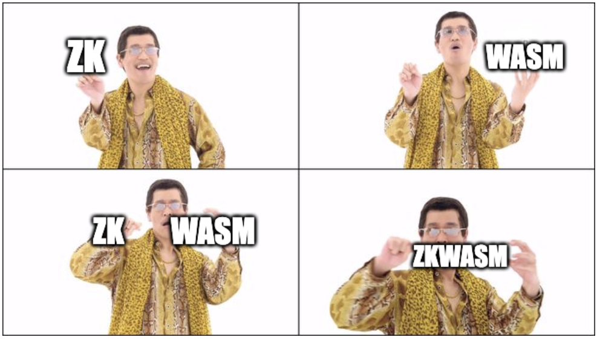

Abstract
You can simplify zkWASM = ZK + Wasm, we build zk-SNARK circuit to prove the state transitions of WebAssembly run-time.
Thing that we knew so far
WebAssembly
- WebAssembly Troubles part 1: WebAssembly Is Not a Stack Machine
- WebAssembly specification core
- Current WebAssembly is
wasm32(32 bits of address space) there is a proposal to extends Wasm's address space, memory64 - Wasm support multiple type of data
- List of instruction set
- If we find a way to deal with character device like
stdin,stdout,stderr. We're probably able to solve the issue with network device with the same approach.
zkWASM
- WebAssembly emulator isn't a ZK-friendly VM
Question section
Anything that's in doubt or uncertain
Study from manuscript
Reading this manuscript give us a starting point to design our own zkWASM.
We consider Wasm run-time as a state machine:
Input data of Wasm run-time
- Wasm run-time will be init with a input tuple: \((I(C, H), E, IO)\)
- \(I\): Wasm executable image
- \(C\): Code image (code image is a read only memory section)
- \(H\): Initial memory (what's kind of the initial memory? is it a stack and can be popped by
local.get?)
- \(E\): Entrypoint of the program (the initial state will has
iaddr = E) - \(IO\): Represent as
stdinandstdout
- \(I\): Wasm executable image
In the manuscript they supposed that, zk-SNARK circuit will take the whole input tuple and prove the result of stdout.
Note:
- In the manuscript they don't mention about block devices
- Do we need data encoding for
stdin? stdoutcan be simulate as a write only memory, where thedata_ptrincrease 1 for every byte of data- Could we use WASI to replace
stdinandstdout? - Wasm spec still updating we should aware of version diff
Internal state of Wasm run-time
Denote \(S\) is state of Wasm run-time, it's a tuple: \((𝑖𝑎𝑑𝑑𝑟, F,M, G, SP, I, IO)\)
- \(𝑖𝑎𝑑𝑑𝑟\): current address of instruction in memory (\(𝑖𝑎𝑑𝑑𝑟 = E\) at the beginning, 𝑖𝑎𝑑𝑑𝑟 is not program count
PC) - \(F\): Calling frame with a
depthfield (is it a stack?) - \(M\): Memory state
- \(G\): Global variables
- \(SP\): Stack
- \(I\): Wasm executable image
- \(C\): Code image (𝑖𝑎𝑑𝑑𝑟 can't point to a address outside the code image)
- \(H\): Initial memory
- \(IO\): Represent as
stdinandstdout
Here are steps of the execution:
- Step 1: Take the internal state \(S_i\) as the input (At the initial state, \(S_i.\text{𝑖𝑎𝑑𝑑𝑟} = E\)).
- Step 2: Execute the opcode at current 𝑖𝑎𝑑𝑑𝑟 over \(S_{i}\) to compute the next state \(S_{i+1}\). We called this is a execution trace \(t_i\)
- Step 3: If calling frame's depth isn't zero then repeat
Step 1, otherwise stop.
After we complete the computation, we have:
- \([t_0, t_1,..t_n]\): Execution trace of the program
- \(O\): The result of program in
stdout
Note:
- We need to implement execution trace computation for every WebAssembly opcode
Introduction
WebAssembly, or Wasm for short, is a safe, portable, low level code format designed for efficient execution and compact representation.
The current Wasm is wasm32. There is a proposal, named memory64, to add support for 64-bit memory indexes to Wasm.
Structure
Values
Bytes
Bytes are represented as hexadecimal literals less than 256.
byte: \(0x00\) | \(0x01\) | \(0x02\) |... | \(0xff\)
Integers
Types of integers are demermined by their bit length \(b\) and whether they are signed or unsigned.
ub: \(0\) | \(1\) |...| \(2^b-1\)
sb: \(-2^{b-1}\) |...| \(-1\) | \(0\) | \(1\) |...| \(2^{b-1}-1\)
ib: ub
The signedness of ib depends on context. They are automatically interpreted as unsigned integer. However, some operations convert them into signed integer.
In Wasm, the main types of integers are: u32, u64, s32, s64, i8, i16, i32, i64.
Note: Need to specify the endianness.
Floating-Points
Floating-point represents 32 or 64 bit values that correspond to the respective binary formats of the IEEE 754-2019 standard.
fb: +fbmag | -fbmag
fbmag: \((1+uM2^{-M}2^e)\) if \(-2^{E-1}+2 \leq e \leq 2^{E-1}-1\)
\\((0+uM2^{-M}2^e)\\) if \\(e=-2^{E-1}+2\\)
\\(\inf \\)
\\(nan(n)\\) if \\(1\leq n \leq 2^M\\)
where \(M=signif(N)\) and \(E=expon(N)\) with
\(signif(32)= 23\) \(expon(32)=8\)
\(signif(64)= 52\) \(expon(64)=11\)
Vectors
Numeric vectors are 128-bit values that are processed by vector instructions. They are represented in the abstract syntax using i128.
Names
Names are sequences of characters.
name: (char)* if |utf8(char*)| \(<2^32\)
char: \(U+00 |...| U+D7FF | U+E00 |...| U+10FFF\)
The length of the name is bounded by the length of utf8 encoding.
Types
Number types
Number types are numeric values.
numtype: i32 | i64 | f32 | f64
Questions: Wasm numeric values also consists of i8, i16. Why don't we have i8 and i16 in number types?
Vector types
Vector types are vector of numeric values processed by vector instructions.
vectype: v128
The type v128 is a 128 bit vector of packed integer or floating-point data.
Questions: What does bit means here? Is it the size of a vector or something?
Reference types
Reference types are first-class (what does this mean?) references to objects in the runtime store.
reftype: funcref | externref
As in the wasm spec, funref is the union all references to functions, regardless of their function types.
Similarly, externref is the infinite union of all references to objects owned by the embedder (what does embedder mean?) and that can be passed into WebAssembly under this type.
Value types:
Value types are that Wasm code can with and the values that a variable accepts.
valtype: numtype | vectype | reftype
Result types:
Result types is the result of executing instructions or functions which is a sequence of values, written with brackets.
resulttype : [vec(valtype)]
Limit Types:
Limit types are the range of storage of memory types and table types
limit: \({\)min u32, max u32 \(}\)
The value max is optional. If there is no max, the storage can grow to any size.
Memory Types:
memtype: limits
The limits here is the total number of page size?.
Table Types:
Table types classify tables over elements of reference types within a size range.
tabletype: limits reftype
Like memories, tables are constrained by limits for their minimum and optionally maximum size.
Global Types:
Global types classify global variables, which hold a value and can either be mutable or immutable.
globaltype: mut valtype
mut: const | var
Modules
Indices
All types of indices start with zero. Each class of definition has its own index space
Types
Functions
func: {type typeidx, locals vec(valtype), body expr}
The type of the function
The locals of the function is a vector of mutable local variables and their types.
The body of the function declares a sequence of instructions. Upon termination, it must produce stack matching the function type’s result type.
Question: What does the stack contain? The value of the function's result or the type of the function's result?
Tables
The table component of a module defines a vector of tables described by their table type:
table: {type tabletype}
Memory
A memory is a vector of raw uninterpreted bytes.
Memories can be initialized through data segments.
Memories can be managed through paging.
mem: {type memtype}
Memories are referenced through memory indices, starting with the smallest index not referencing a memory import.
Globals
The global component is a vector of global variables.
global: {type globaltype, init expr}
A global variable has a type. It also has an init value which is given by an expression.
Types
Most types are automatically valid. However, there are several restrictions to Limits, Block Type, Table Types, Memory Types.
Limits
Trivially we must have \(limits.min \leq limits.max\). In addition, depend on different types (table, memory,...), we have a \(k\) such that:
-
\(limits.min \leq k\).
-
If \(limits.max\) is not empty, then \(limits.max \leq k\).
We say that the limit is valid within range \(k\). As in, the limit condition is formally expressed as follow:
\(limits.min \leq k\). \((limits.max \leq k)^{?}\). \((limits.min \leq limits.max)^{?}\).
limits:k
Block Types
Function Types
The function types are always valid.
Table Types
The limit of table type must be valid within range \(2^{32}-1\).
tabletype.limits:2^{32}
Memory Types
The limit of memory type must be valid within range \(2^{16}\).
memtype.limits:2^{16}
Global Types
The global type is always valid.
External Types
table tabletype: The table type tabletype must be valid.
mem memtype: The memory type memtype must be valid.
func functype: The function type functype must be valid.
Types
Most types are automatically valid. However, there are several restrictions to Limits, Block Type, Table Types, Memory Types.
Limits
Trivially we must have \(limits.min \leq limits.max\). In addition, depend on different types (table, memory,...), we have a \(k\) such that:
-
\(limits.min \leq k\).
-
If \(limits.max\) is not empty, then \(limits.max \leq k\).
We say that the limit is valid within range \(k\). As in, the limit condition is formally expressed as follow:
\(limits.min \leq k\). \((limits.max \leq k)^{?}\). \((limits.min \leq limits.max)^{?}\).
limits:k
Block Types
Function Types
The function types are always valid.
Table Types
The limit of table type must be valid within range \(2^{32}-1\).
tabletype.limits:2^{32}
Memory Types
The limit of memory type must be valid within range \(2^{16}\).
memtype.limits:2^{16}
Global Types
The global type is always valid.
External Types
table tabletype: The table type tabletype must be valid.
mem memtype: The memory type memtype must be valid.
func functype: The function type functype must be valid.
Module
Tables
The table type tabletype must be valid.
Memories
The memory type memtype must be valid.
Global
The blobal type mut \(t\) must be valid.
The expression expr must be valid with the result type \(t\).
The expression expr must be constant.
Runtime
Values
Values can be integers, floating-points data of 32 or 64 bit width each, vectors of 128 bit width or reference types
value: num | vec | ref
num: i32.const i32 | i64.const i64 |
**f32**.**const** **f32** | **f64**.**const** **f64**
vec: v128.const i128
ref: ref.null t | ref funcaddr | ref.extern externaddr
Result
A result is the outcome of a computation. It can be a sequence of values or a trap.
result: val* | trap
Address
Function instances, table instances, memory instances, and global instances, element instances, and data instances in the store are referenced with abstract addresses.
addr: 0 | 1 | | 2 | ...
Memories
It record its type and holds a vector of bytes.
memoryinst {type memtype, data vec(byte)}
Globals
A global instance represents a global variable. It has a type and value of the variable.
globalinst: {type globaltype, value val}
Runtime
Values
Values can be integers, floating-points data of 32 or 64 bit width each, vectors of 128 bit width or reference types
value: num | vec | ref
num: i32.const i32 | i64.const i64 |
**f32**.**const** **f32** | **f64**.**const** **f64**
vec: v128.const i128
ref: ref.null t | ref funcaddr | ref.extern externaddr
Result
A result is the outcome of a computation. It can be a sequence of values or a trap.
result: val* | trap
Address
Function instances, table instances, memory instances, and global instances, element instances, and data instances in the store are referenced with abstract addresses.
addr: 0 | 1 | | 2 | ...
Memories
It record its type and holds a vector of bytes.
memoryinst {type memtype, data vec(byte)}
Globals
A global instance represents a global variable. It has a type and value of the variable.
globalinst: {type globaltype, value val}